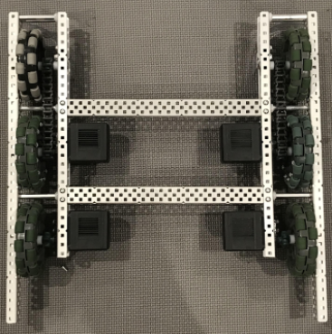

Career Exploration
Some insights on my exploration for a career
Career Exploration Narrative

During my time in high school, I have explored various engineering careers through classes, clubs, volunteering opportunities, and profilers. While in high school, I have taken Computer Science Essentials and AP Computer Science Principals, two classes revolving around Python and data science. These classes have drastically improved my capabilities as a programmer and allowed me to explore applications of my newfound knowledge. Furthermore, the classes have provided a way to link computer science to other subjects, including data science, public service, and other forms of science. These classes also provided me with access to interest profilers, including that by CA Colleges. The profiler ranked computer science and mechanical engineering as my “best fit” career options. As a whole, the classes I have taken at Dublin High School have influenced my view on computer science and increased my interest in the subject.
Besides from classes, I have explored potential careers through various clubs and opportunities. One of the primary clubs that has enabled me to do this is Gael Force Robotics (GFR). As a sophomore, I was selected to join 5327S, a VEX Robotics competitive team established for the Tipping Point season. Robotics deals with both mechanical engineering through the necessity to build a physical robot, electrical engineering with the necessity to understand how power affects variables such as speed, and computer science through the necessity to create various programs to make the robot actually move. During my time on 5327S, I was able to experience each facet of robotics, from manually building tank drives to writing test programs for the fifteen-second autonomous period. The club has allowed me to explore each career field in a fun and engaging way, greatly influencing how I see each career option. With the Tipping Point season coming to a close, I was recruited to join 5327C, a different GFR team, for the upcoming Spin Up season, where I will continue to learn about these fields.